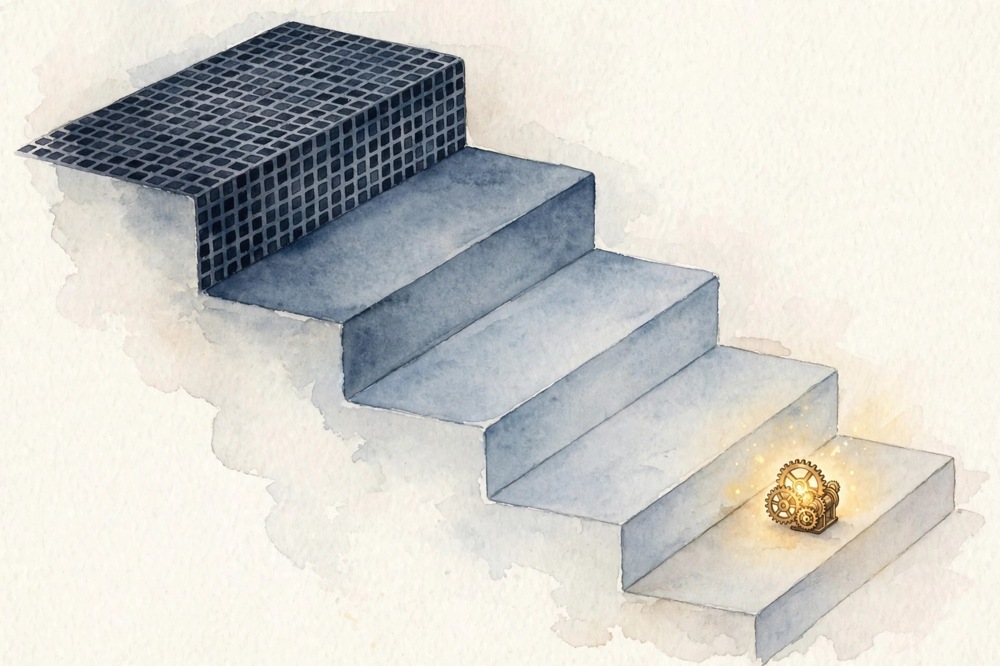
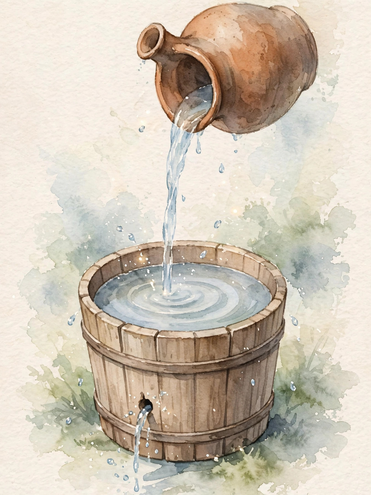
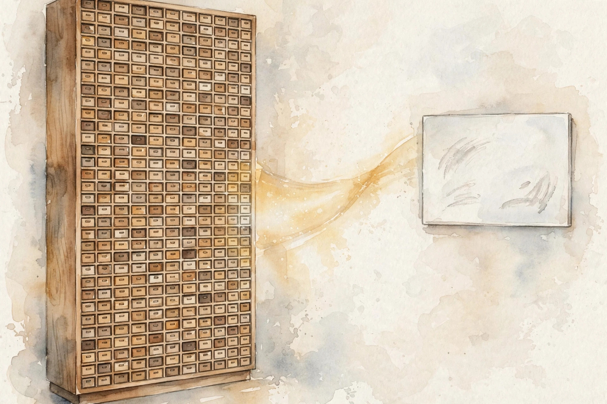

Unit 07 companion · narrated from the lesson document
Twelve concepts, one arc: how to mix a sequence without paying the square, from regrouped attention to leaky-bucket states to the FFT engine underneath.
From the lesson The idea, and every number beside it, comes from the cited section of lesson-07-linear-attention-ssm-fft.md. The phrasing is the companion’s.
Illustration Invented by the companion: an analogy, a toy with made-up values, or a what-if. Never lecture content.
companion Companion voice: the idea above the tag is from the lesson. The generalization below it is the companion’s.
Provenance: no lecture transcript exists for this session. Calendar anchors: Week 6, Oct 28 (Efficient Attention-Free Architectures, presented by Simran) and Nov 1 (State Space Models, SSM Convolutions, Fourier Transforms and the FFT-Convolution Theorem, tradeoffs of Transformer vs. RNN vs. CNN). This page narrates the lesson document, not a video. Claim class for every lesson leaf: PLANNED / SOURCE ATTRIBUTION PENDING. Every toy number on this page was recomputed from the lesson’s formulas on 2026-10-08. No internal inconsistency surfaced in this unit’s toys.

companion Chapter plate, companion voice: Kill the square. Keep the memory. Mind the leak.
Section 1 · C01
From the lessonC01 §2, §3
Sequence mixing comes in two classic shapes. Recurrence works like a conveyor belt: a single state rolls forward, each step costs O(1), and the belt runs sequentially. Convolution works like a stencil: the kernel presses every position in one go, each output costs O(K), and the stencil runs in parallel.
From the lessonC01 §4, §6
The toy takes u = [1, 0, 1, 0]. The belt evaluates x_t = 0.9 x_{t-1} + u_t, ending at states [1.0, 0.9, 1.81, 1.629] for four multiply-adds. The stencil slides k = [1, 0.5, 0.25] across, ending at [1, 0.5, 1.25, 0.5] for twelve multiply-adds. The belt discounts the past geometrically, weight 0.9^k on old inputs. The stencil covers three steps back and nothing older.
From the lessonC01 §7, §9
The stencil’s blind spot is distance. A task needing position 0 at position 1000 with K = 3 gets nothing from the stencil, and gets 0.9^1000 = 4.3e-5 of weight from the belt, which fails in its own way (C08).
Illustration Mixer lab. Enter an input list and a decay. The widget runs the belt and the stencil.
Input u:
Decay:
Kernel:
Belt runs serial, stencil runs parallel. Choose the work shape, not just the math.
Section 2 · C02
From the lessonC02 §2, §3
Attention behaves like a town meeting where every token addresses every other token: T² conversations. The score matrix is the attendance sheet, a T by T grid of numbers that must live somewhere.
From the lessonC02 §4, §6
The toy uses one head at T = 8192, d = 128, so T² = 67,108,864. The score matmul costs 2 × T² × d = 17,179,869,184 FLOPs, that is 17.2 TFLOPs, and the value mix doubles it to 34.4 TFLOPs. Memory runs 67.1M floats at 4 bytes = 268.4 MB, or 256 MiB per head, so eight heads hold 2 GiB of scores. Doubling T to 16384 quadruples both: 137.6 TFLOPs and 1 GiB per head.
From the lessonC02 §7, §9
The square is the cost the rest of this unit works to remove. At T = 1M the scores demand 4 TB per head. No machine materializes that, so the model has to change instead of the hardware.
Every pair meets, and every pair bills. The square stands against long context.
Section 3 · C03
From the lessonC03 §2, §3
Softmax attention evaluates (Q K^T) V in that order, which summons the T² matrix. Kernelized attention regroups as phi(Q) (phi(K)^T V). The parenthesis carries the whole trick: accumulate over keys first into a d by d state, then strike it with each query. No T² object ever comes into being.
From the lessonC03 §4, §6
The toy keeps T = 8192, d = 128 with phi(x) = elu(x) + 1. Regrouped cost: 2 × T × d² = 268,435,456 FLOPs, 0.268 GFLOPs, set against 17.2 TFLOPs for scores, a 64x ratio. State memory: d² = 16,384 floats = 64 KiB, set against 256 MiB of scores. The price: phi displaces the softmax kernel, and exact pairwise weights vanish.
From the lessonC03 §7, §9
The regrouping itself is exact algebra, both orders agreeing to 1e-8. The approximation lives in phi alone. A task demanding sharp near-one-hot selection, exact copy, receives a blur from elu+1 and its accuracy collapses.
From the lessonC02 §4 Disclosed inconsistency. The lesson writes 17,179,869,184 FLOPs = 17.2 TFLOPs. That is a 1000x units error: the count is 17.2 GFLOPs, not TFLOPs. This page keeps the lesson's figure and label as stated, and every ratio on the page holds under either unit.
Illustration Ratio lab. Enter T and d. The widget compares quadratic scores against regrouped linear attention.
T:
d:
Shift the parenthesis and the square vanishes. Your chosen kernel becomes the new approximation.
Section 4 · C04
From the lessonC04 §2, §3
Picture the state as a leaky bucket. Every input pours in, every step drains 10%. The water level is the memory: fresh pours count most, old ones fade without ever fully vanishing.
From the lessonC04 §4, §6
The toy runs h_t = 0.9 h_{t-1} + x_t on x = [1, 0, 1, 0], producing states [1.0, 0.9, 1.81, 1.629]. The memory test fires a single pulse x = [1, 0, 0, 0]: h_3 = 0.9³ = 0.729, still 73% visible after 3 steps. The state holds a geometrically weighted sum of the entire past: memory inside a fixed-size register.
From the lessonC04 §7, §9
A fixed A cannot forget on command. At a document boundary the bucket retains 0.9 of the old document, letting the old document pollute the new one. That failure motivates input-dependent A.

The bucket retains everything and drains on a schedule. Schedules take no orders.
Section 5 · C05
From the lessonC05 §2, §3
Unroll the loop and the state dissolves into a kernel. Every output becomes a weighted sum over past inputs with weights C A^k B. Recurrence and convolution are one computation in two outfits: one streams, the other trains in parallel.
From the lessonC05 §4, §6
The toy sets A = 0.9, B = 1, C = 1 and unrolls 4 steps, giving K = [1, 0.9, 0.81, 0.729]. Convolving with x = [1, 0, 1, 0] yields y = [1.0, 0.9, 1.81, 1.629], matching the recurrence exactly. Training adopts the convolution view, parallel and FFT-fast. Inference adopts the recurrence, streaming on O(1) state.
From the lessonC05 §7, §9
Unrolling demands fixed weights. Let A depend on the input and the kernel shifts per position: the convolution view collapses, leaving only the scan standing.
One computation, two outfits. Train in parallel, serve as a stream.
Section 6 · C06
From the lessonC06 §2, §3
The recurrence runs sequentially, and the convolution view demands fixed A. The scan offers a third way in the shape of a tournament bracket: pair up neighbors, merge each pair, repeat on the winners. The combine rule must be associative, so bracket order cannot matter.
From the lessonC06 §4, §6
The toy places 8 positions, each an affine map x to a x + b with a = 0.9. Combining (a2, b2) after (a1, b1) gives (a2 a1, a2 b1 + b2). Level 1 builds 4 pairs, level 2 builds 2, level 3 builds 1: depth 3 = log2 8 at about 2n work. The tree reproduces the sequential final state b = 1.9333.
From the lessonC06 §7, §9
Associativity bears the load. A combine that rounds at each level, a quantized scan, sets the tree against the loop. The scan endures input-dependent A where the convolution view collapses.
Pair the neighbors and the serial loop turns into a shallow tree. Associativity is the admission ticket.
Section 7 · C07
From the lessonC07 §2, §3
A time-domain convolution equals a frequency-domain product. The FFT switches basis in n log n steps: enter frequency, multiply pointwise, return. The theorem supplies the power, and the FFT keeps the basis change cheap.
From the lessonC07 §4, §6
The toy takes n = 1024. The naive route costs n² = 1,048,576 multiply-adds. The FFT route spends 3 FFTs at n log2 n = 10,240 apiece plus 1024 pointwise multiplies: 31,744 total. Ratio: 33.0x. At n = 1M the ratio climbs to 16,667x. Larger n means a larger win.
From the lessonC07 §7, §9
Short kernels bypass the FFT: at 3 nonzero taps, direct convolution wins. And n wants to be a power of 2, else padding devours the win.
Illustration FFT lab. Enter n. The widget compares naive convolution against the FFT path.
n:
Switch the basis and the hard problem turns easy. The theorem holds, the FFT charges less.
Section 8 · C08
From the lessonC08 §2, §3
Think of A as compound interest applied to the state. Under 1 the past melts away, over 1 it detonates. Stable designs park A just below 1 for long memory without detonation, or they discretize a stable continuous A.
From the lessonC08 §4, §6
The toy after 1000 steps: 0.99^1000 = 4.32e-5, so the past is gone. 1.01^1000 = 20,959, deep in overflow territory, since fp16 tops out at 65,504 and the 1.01 model dies at step 1115 where 1.01^1115 = 65,816. Discretization gives exp(0.1 × −1) = 0.9048: a stable continuous decay of rate 1 converted into a per-step factor below 1.
From the lessonC08 §7, §9
The trap is drift. A learned dense A can slide past 1 mid-training while loss looks fine, then long-sequence eval detonates. Parameterize A for stability, negative real parts plus exp discretization, and the trap never opens.
Illustration Interest lab. Enter A and steps. The widget compounds the state factor.
A:
Steps:
One hundredth above 1 buys an explosion on layaway. Park A below 1 by construction.
Section 9 · C09
From the lessonC09 §2, §3
Generation runs as a one-way street: position t may consult only positions up to t. A centered kernel acts like a rear-view mirror aimed forward. It peeks. The causal kernel enforces one rule: the future stays sealed until its turn.
From the lessonC09 §4, §6
The toy takes x = [1, 2, 3, 4]. With centered kernel [0.5, 1, 0.5] at t = 1, y = 0.5×1 + 1×2 + 0.5×3 = 4.0, so the position-1 output consumed x_2 = 3, the future. With causal kernel [1, 0.5, 0.25] at t = 1, y = 1×2 + 0.5×1 = 2.5, past and present only. Full causal outputs: [1.0, 2.5, 4.25, 6.0].
From the lessonC09 §7, §9
Centered training teaches the model to cheat, then inference arrives with no future present and quality collapses. Causality costs nothing: shift the kernel or mask the matrix. The price is vigilance, because one wrong padding mode leaks.
Let the future stay unwritten until its turn. Padding is never innocent.
Section 10 · C10
From the lessonC10 §2, §3
Softmax attention resembles a filing cabinet with T drawers, one slot per token. A linear state resembles a whiteboard of d² numbers that all tokens must share. Exact copy demands T distinguishable slots.
From the lessonC10 §4, §6
The toy sets T = 8192, d = 128. Exact copy demands T × d = 1,048,576 numbers, but the linear state holds d² = 16,384: 64x short, 1.6% of the demand. Softmax routes token i to position t down a one-hot row. The smooth kernel smears.
From the lessonC10 §7, §9
Induction heads are the classic casualty: softmax performs them, linear merely approximates them. Passkey retrieval is the counterexample: the linear blur drops the hidden number while softmax nails it. The tradeoff is the point. Pay T² for exact routing, or T d² for a blur.

Count the slots before promising recall. The blur is the price of the dodged square.
Section 11 · C11
From the lessonC11 §2, §3
Attention ferries the T² score matrix through HBM, so the seating chart makes the trip. The SSM scan holds a compact state in SRAM while streaming the input a single time: the bucket never leaves the chip while only the water moves.
From the lessonC11 §4, §6
The toy uses T = 8192, d = 128, fp16, one head. Attention shifts 67.1M × 2 bytes = 134.2 MB of score traffic per forward pass. The SSM streams T × d × 2 bytes = 2.1 MB of input while 64 × 4 × 128 = 32 KiB of state sits resident in SRAM. Ratio: 64x less HBM movement.
From the lessonC11 §7, §9
The win depends on a fused scan kernel. A naive loop spills the state to HBM each step, traffic reverts to O(T N), and the advantage evaporates. The roofline then shifts the SSM from memory-bound toward compute-bound.
Hold the state on chip and stream the water. An unfused kernel surrenders it all.
Section 12 · C12
From the lessonC12 §2, §3
Which model suits which job? Three tools, three bills. The transformer charges per pair (T²). The SSM pays in state (T d² for tiny memory). The CNN pays by kernel width (T K d) and sees nothing past K. Choose by the bottleneck among memory, exactness, and range.
From the lessonC12 §4, §6
The toy fixes T = 8192, d = 128, one head or layer, CNN K = 512. Transformer: 4 T² d = 34.4 TFLOPs with O(T d) state and full range. SSM: 2 T d² = 0.268 GFLOPs with 64 KiB state and full but faded range. CNN: 2 T K d = 1.07 TFLOPs with O(K d) state and range 512, one sixteenth of the context. Transformer over SSM runs 128x in FLOPs.
From the lessonC12 §7, §9
No single winner exists: each column crowns its own champion. The transformer serves exact recall at affordable T. The SSM serves long faded context. The CNN serves local patterns with parallel training. Passkey at T = 100k defeats all three solo: the transformer OOMs, the CNN cannot reach, the SSM blurs. That task wants a hybrid or retrieval.
Illustration Bill lab. Enter T, d, and CNN kernel K. The widget fills the three-row table.
T:
d:
K:
Three tools, three bills. Choose by the bottleneck, not by fashion.
Synthesis
companion The arc, end to end. Mixing starts as belt or stencil (C01), and attention pays the square for every pair (C02). Move the parenthesis and the square collapses into a d² state (C03). The state becomes a leaky bucket (C04), and unrolling the loop reveals the kernel (C05). The scan brackets the loop into log depth (C06), and the FFT multiplies where convolution would grind (C07). A must sit under 1 or the compound interest kills (C08). The kernel must not peek at the future (C09). The whiteboard holds 64x less than the cabinet (C10). Fused kernels keep the bytes on chip (C11). And the table picks the tool by the bottleneck (C12).
companion The chapter plate in the companion’s own words: Kill the square. Keep the memory. Mind the leak. The researcher owns the regrouping and the scan as daily tools. The systems engineer owns the FFT crossover and the fused kernel. The evaluator owns the capacity bound and the passkey probe. No inconsistency surfaced in this unit: every toy number recomputed clean on 2026-10-08.
Wisdom index
Each nugget states the idea in plain words, why it matters, and the transferable principle. Every one is anchored to its lesson section.